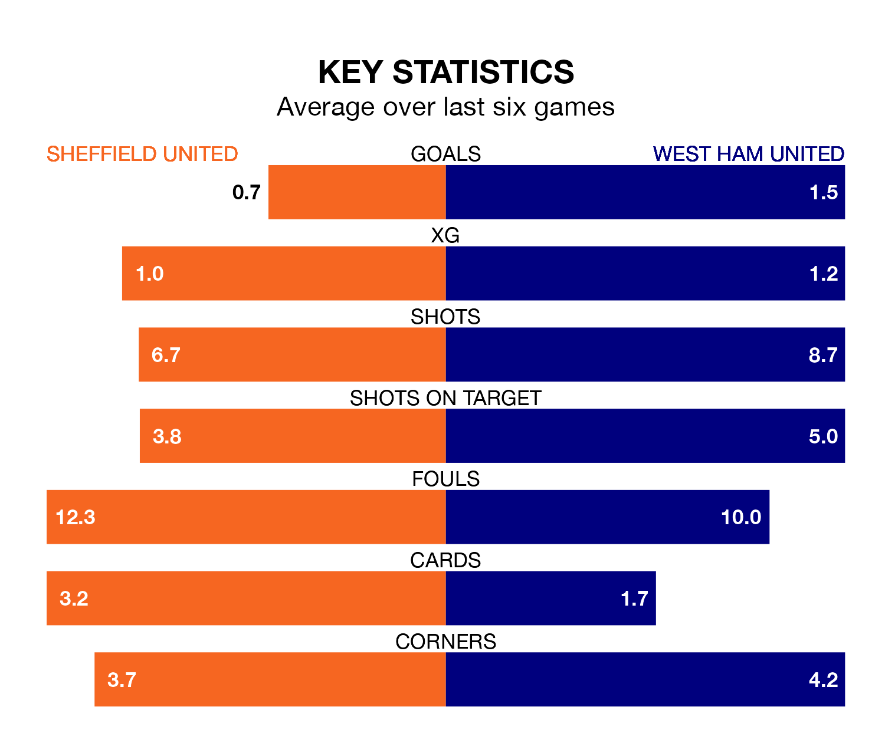

Sheffield United are on a poor run ahead of hosting West Ham United at Bramall Lane on Sunday, with just four points collected from their last six games.
The Blades have picked up one win and one draw in their last six Premier League games, and face a Hammers side whose last six games have brought four wins and one draw.
Sheffield United are bottom of the table after 20 games, of which they have won two and drawn three, earning nine points.
West Ham are 14 places ahead of the Blades in sixth, with 10 wins and four draws putting them on 34 points.
With 15 goals in 20 games so far this season, the home team are the league's lowest scorers with 0.8 goals per game. And they are conceding more than average, letting in 49 goals at a rate of 2.5 per game.
West Ham United, meanwhile, are average scorers, with 1.6 goals per game. They have conceded 1.5 goals per game.
In Jarrod Bowen, the Hammers have one of the league's most on-form strikers so far this season. He has notched 11 goals in 19 appearances, to sit fifth in the scoring charts.
His goal rate of one every 155 minutes is quicker than that of Oliver McBurnie, Sheffield United's top scorer with a goal every 226 minutes, and a total of three goals in 11 games.
Sheffield United's last match was on December 30, a 2-0 loss against Manchester City.
West Ham drew 0-0 with Brighton and Hove Albion last time out, on January 2.
Updated: 10:50, 10/01/24